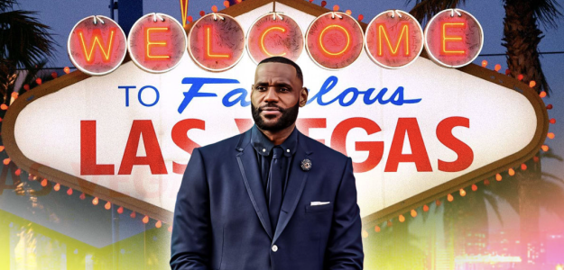

LeBron James, considerado uno de los mejores jugadores en la historia de la NBA, ha expresado
abiertamente su deseo de ser propietario de un equipo de la liga. Tras casi dos décadas de dominar
las canchas, el astro de los Lakers busca dejar una huella aún más profunda en el baloncesto al
pasar de jugador a dueño. "Quiero tener mi propio equipo. Sé lo que se necesita para construir una
organización ganadora", declaró James en una reciente entrevista.
Las intenciones de LeBron no son nuevas. Su interés en la gestión deportiva ha crecido en los
últimos años, especialmente después de su asociación con Fenway Sports Group, con quienes ya tiene
participación en equipos como el Liverpool FC y los Boston Red Sox.⬆

Las Vegas
LeBron ha dejado claro que su ciudad predilecta para un equipo de la NBA es Las
Vegas, un mercado en auge que se ha consolidado como un epicentro deportivo gracias al éxito de
franquicias como los Golden Knights de la NHL y los Raiders de la NFL. "Las Vegas está lista para un
equipo de la NBA. Es el lugar perfecto", afirmó James.
La expansión de la liga parece estar en el horizonte, y la posibilidad de que LeBron sea uno de los
principales candidatos para liderar una nueva franquicia genera gran expectativa entre los fanáticos
y analistas. Su experiencia en la cancha, su visión empresarial y su influencia global lo convierten
en un candidato ideal para convertir este sueño en realidad.
Mientras tanto, la NBA sigue evaluando cuándo y cómo llevará a cabo una posible expansión, y LeBron
James parece decidido a estar al frente cuando llegue el momento.⬆